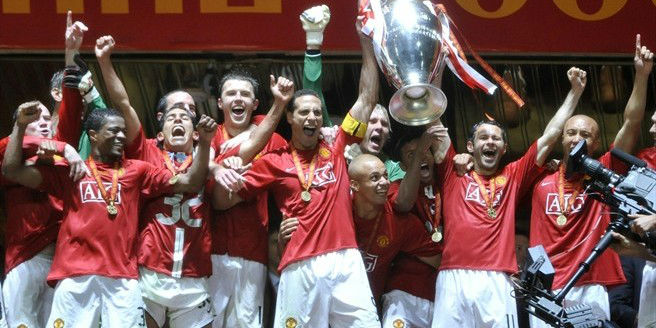
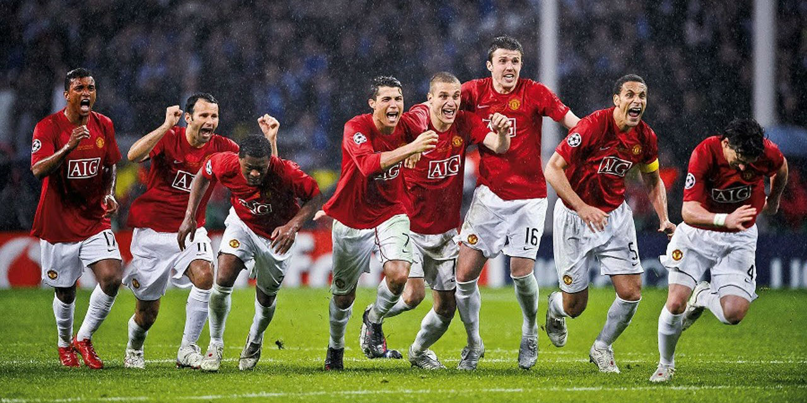
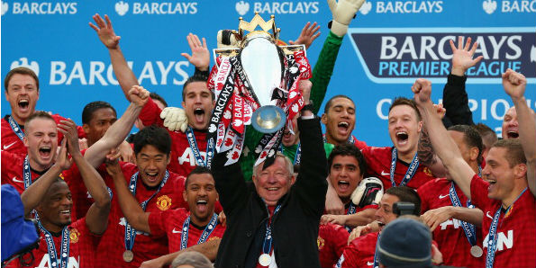
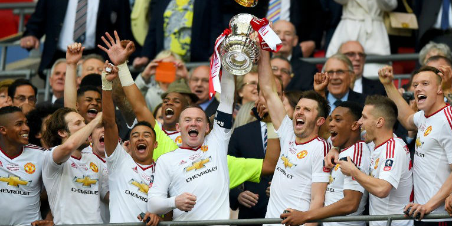

Manchester United is a Soccer club based in Manchester, England. The club was founded as Newton Heath LYR Football Club in 1878, and then changed its name to Manchester United in 1902. Their home stadium is Old Trafford and their main rival is Manchester City. Manchester United is the most succesful English club with 66 elite honors including 20 premier league titles, 12 time FA cup winners, 3 champions leagues, and oen of the very few clubs to win a treble (3 trophies all in the same season). United's first trophy was the Manchester cup in 1886 as Newton Heath and their latest was the 2017 Europa League. It also has the highest club value reaching over 3.5 billion pounds.